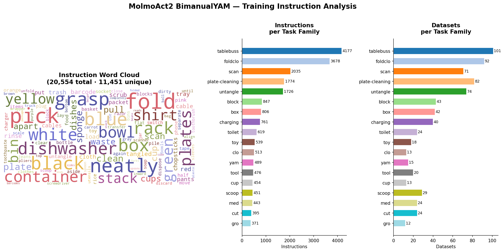
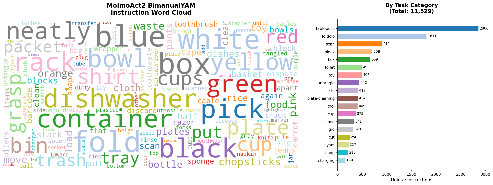

tablebuss (101 datasets, 4,177 instr) + foldclo (92 datasets, 3,678 instr) + scan (71 datasets, 2,035 instr) together account for ~48% of all instructions. The distribution is heavily long-tailed with the top 3 families dominating.
charging (dedup ratio 0.21) and plate-cleaning (0.23) have extremely low diversity despite high episode counts — the re-annotation pipeline generates many near-identical instructions. toy (0.92) and gro (0.87) have much richer per-episode instruction variety.
Paper success rates (Table 19) are only reported for 5 task families. cup maps to the highest success (77% avg), consistent with high dataset count (13) and clean pick-and-place structure. tool/pegboard scores only 14% despite 20 datasets — suggesting data volume alone doesn't guarantee performance on dexterous tasks.
Pour task is absent from all 737 datasets. Zero coverage of any pouring, liquid transfer, or tilting behavior in the training data. Zero-shot failure on pour task instructions is expected — the action expert has no robot demonstration pairing this instruction family to motor behaviors. This is distinct from the VLM backbone's semantic understanding of "pour."
Datasets per Task Family
Instructions per Task Family (Total vs Unique)
Success Rate vs Dataset Count (paper Table 19)
Only families with paper-reported success rates shown. Bubble size = unique instruction count.
Deduplication Ratio per Family
unique / total instructions. Low ratio = repetitive re-annotation; high = diverse.
Top tokens across all instructions are color words (blue, white, black, green, yellow) and object nouns (box, bowl, cup, plate). Instruction diversity is driven almost entirely by object-attribute variation, not task-type variation. The action verbs are a small, repetitive set: place, pick up, fold, grasp, put. "Pour" and related liquid-transfer vocabulary are entirely absent — consistent with zero-shot failure on pour tasks.
All Instructions — Word Cloud

All 20,554 instructions. Color and object words dominate; task verbs are a narrow, repetitive set.
Unique Instructions Only — Word Cloud

Deduplicated to unique instructions. Distribution tightens further — relative weight of rare action verbs drops when re-annotation copies are removed.
| Family | Datasets | Total Instr | Unique Instr | Dedup Ratio | Paper Tasks (MolmoAct2 %) | Avg Success |
|---|